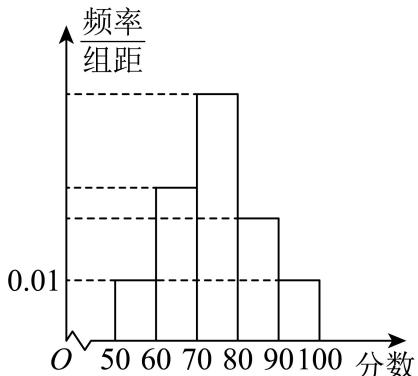
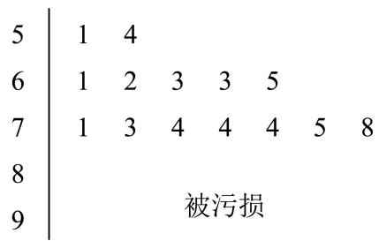
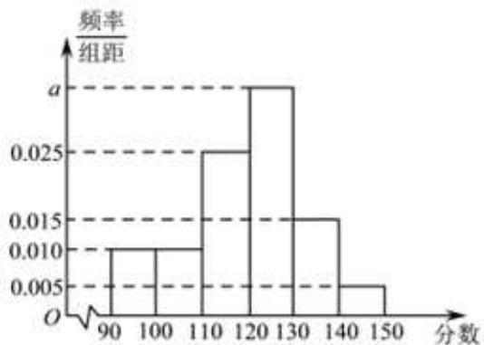

01 【来源：闵行24一模·14】
某校读书节期间，共120名同学获奖（分金、银、铜三个等级），从中随机抽取24名同学参加交流会，若按高一、高二、高三分层随机抽样，则高一年级需抽取6人；若按获奖等级分层随机抽样，则金奖获得者需抽取4人。下列说法正确的是（ ）。
A. 高二和高三年级获奖同学共80人
B. 获奖同学中金奖所占比例一定最低
C. 获奖同学中金奖所占比例可能最高
D. 获金奖的同学可能都在高一年级
作答区
FY27高数功底考 · 学生版 · 本专题 26 题
旧版 PDF 尚未同步近期校订，已暂停下载；请用打印／保存本专题 PDF 导出当前网页。学生版含作答区，不含答案解析。
没有匹配的题目，请更换关键词或清空搜索。
某校读书节期间，共120名同学获奖（分金、银、铜三个等级），从中随机抽取24名同学参加交流会，若按高一、高二、高三分层随机抽样，则高一年级需抽取6人；若按获奖等级分层随机抽样，则金奖获得者需抽取4人。下列说法正确的是（ ）。
A. 高二和高三年级获奖同学共80人
B. 获奖同学中金奖所占比例一定最低
C. 获奖同学中金奖所占比例可能最高
D. 获金奖的同学可能都在高一年级
为加强学生睡眠监测督导，学校对高中三个年级学生的日均睡眠时间进行调查。根据分层随机抽样法，学校在高一、高二和高三年级中共抽取了 名学生的日均睡眠时间作为样本，其中高一 人，高二 人，已知该校高三年级一共 人。
（1）学校高中三个年级一共有多少个学生？
（2）若抽取 名学生的样本极差为 ，数据如下表所示（其中 ， 是正整数），求该样本的第 百分位数。
| 日均睡眠时间（小时） | 8.5 | 9 | 9.5 | 10 | |
|---|---|---|---|---|---|
| 学生数量 | 32 | 13 | 11 | 4 |
（3）从这 名学生的样本中随机抽取三个学生的日均睡眠时间，求其中至少有 个数据来自高三学生的概率。
绝对零度（）是一个只能逼近而不能达到的最低温度，那么这个数据是如何测得的？吕同学通过查询资料，知道：①气体温度和气体压强存在线性关系；②当气体压强为 时，气体温度达到绝对零度。以下是吕同学在一次模拟实验时，测得某种气体温度和气体压强的相关数据：
| 数据 | 1 | 2 | 3 | 4 | 5 | 6 |
|---|---|---|---|---|---|---|
| 温度（） | 4.07 | 16.69 | 29.42 | 45.67 | 57.06 | 73.05 |
| 压强（） | 103.095 | 107.734 | 112.461 | 118.469 | 122.706 | 128.758 |
（1）求该模拟实验中，该气体温度的平均值和方差（精确到 ）。
（2）若该次实验下气体压强 关于气体温度 的回归方程为 ，预估该次实验下绝对零度的数值（精确到 ）。
（3）为了验证实验的普适性，吕同学利用不同气体预估绝对零度，得到如下的一组数据。若任取其中的 个数据，求该两个数据与绝对零度（）的误差均小于 的概率。
| 绝对零度（） |
|---|
某区2025年3月31日至4月13日的天气预报如下（温度依次为最高气温和最低气温）。
| 日期 | 天气 | 最高气温/℃ | 最低气温/℃ |
|---|---|---|---|
| 3月31日 | 大部分晴 | 17 | 9 |
| 4月1日 | 阵雨 | 18 | 9 |
| 4月2日 | 阵雨 | 18 | 10 |
| 4月3日 | 阵雨 | 19 | 10 |
| 4月4日 | 多云 | 18 | 9 |
| 4月5日 | 间歇性多云 | 19 | 10 |
| 4月6日 | 多云 | 20 | 10 |
| 4月7日 | 阵雨 | 19 | 10 |
| 4月8日 | 大部分多云 | 19 | 10 |
| 4月9日 | 大部分晴 | 20 | 8 |
| 4月10日 | 多云 | 18 | 8 |
| 4月11日 | 大部分晴 | 18 | 10 |
| 4月12日 | 阵雨 | 17 | 8 |
| 4月13日 | 阵雨 | 17 | 9 |
（1）从3月31日至4月13日某天开始，连续统计三天，求这三天中至少有两天是阵雨的概率；
（2）根据天气预报，该区4月14日的最低气温是 ，温差是指一段时间内最高温度与最低温度之间的差值，例如3月31日的最高温度为 ，最低温度为 ，当天的温差为 。记4月1日至4日这4天温差的方差为 ，4月11日至14日这4天温差的方差为 ，若 ，求4月14日天气预报的最高气温；
（3）从3月31日至4月13日中随机抽取两天，用 表示一天温差不高于 的天数，求 的分布列及期望。
某兴趣班共 150 人，年龄分布及兴趣爱好统计如下：
| 年龄 | 剪纸 | 摄影 | 画画 | 人数 |
|---|---|---|---|---|
| 8 | 45 | |||
| 10 | 55 | |||
| 6 | 50 |
（1）现采用分层抽样抽取 30 人，其中抽到年龄在 岁的有多少人？
（2）该兴趣班 150 人的平均年龄是多少？
（3）现从 150 人中任意抽选 1 人，记抽到的学员年龄在 为事件 ，记抽到学员爱好摄影为事件 。事件 与 是否独立？请说明理由。
为了解某地初中学生体育锻炼时长与学业成绩的关系，从该地区 29000 名学生中抽取 580 人，得到日均体育锻炼时长与学业成绩的数据如下表所示：
| 学业成绩／时间范围（小时） | |||||
|---|---|---|---|---|---|
| 优秀 | 5 | 44 | 42 | 3 | 1 |
| 不优秀 | 134 | 147 | 137 | 40 | 27 |
（1）（4 分）该地区 29000 名学生中体育锻炼时长不少于 1 小时人数约为多少？
（2）（4 分）估计该地区初中学生日均体育锻炼的时长（精确到 0.1）；
（3）（6 分）是否有 95% 的把握认为学业成绩优秀与日均体育锻炼时长不小于 1 小时且小于 2 小时有关？
附：，其中 ，。
2024年法国奥运会落下帷幕。某平台为了解观众对本次奥运会的满意度，随机调查了本市1000名观众，得到他们对本届奥运会的满意度评分（满分100分），平台将评分分为 、、、、 共5层，绘制成频率分布直方图（如图1所示）。并在这些评分中以分层抽样的方式从这5层中再抽取了共20名观众的评分，绘制成茎叶图，但由于某种原因茎叶图受到了污损，可见部分信息如图2所示。

图1

图2
（1）求图2中这20名观众的满意度评分的第35百分位数；
（2）若从图2中的20名观众中再任选取3人做深度采访，求其中至少有1名观众的评分大于等于90分的概率；
（3）已知这1000名观众的评分位于 上的均值为67，方差为64.7，位于 上的均值为73，方差为134.6，求这1000名观众的评分位于 上的均值与方差。
为了了解申辉中学所有学生的每天平均体育运动时间，随机调查了该校 名学生，发现他们每天平均体育运动时间为 。这里的总体是（ ）。
A. 该校所有学生
B. 该校所有学生的每天平均体育运动时间
C. 所调查的 名学生
D. 所调查的 名学生的每天平均体育运动时间
某班一次数学小测验（百分制）后，老师为了奖励同学们平时认真学习，决定给每位同学的成绩加上 分作为过程性评价奖励。加分后，与原始分数相比，不会发生改变的是（ ）。
A. 平均数 B. 中位数 C. 第 百分位数 D. 方差
某次杨浦区高三质量调研数学试卷中的填空题第八题，答对得 分，答错或不答得 分，全区共 人参加调研，该题的答题正确率是 ，则该次调研中全区同学该题得分的方差为______。
某学校举办“乐动体育”比赛活动，高三年级共有 名学生报名参加“小球类项目”，其中参加乒乓球项目的有 人，参加羽毛球项目的有 人，赛前进行了一道比赛通用规则判断题测试，答对得 分，答错得 分，统计结果如下表：
| 乒乓球项目 | 羽毛球项目 | |
|---|---|---|
| 答对人数 | 19 | 16 |
| 答错人数 | 9 | 6 |
根据上述数据，回答下列问题：
（1）求这 名学生的平均得分。
（2）从这 名学生中随机选取 人做裁判。设随机变量 表示两名裁判的最高得分，求 。
（3）是否有 的把握认为该题的测试成绩与比赛项目有关？
附：，，。
为了研究吸烟习惯与慢性气管炎患病的关系，某疾病预防中心对相关调查数据进行了研究，假设 ：患慢性气管炎与吸烟没有关系，并通过计算得到统计量 ，则可推断______原假设 。（填“拒绝”或“接受”，规定显著性水平 ，。）
某工厂为判断两种不同的操作方法是否对生产某种零件的合格个数有影响，收集了相关数据，绘制了 列联表，设原假设 ：两种不同的操作方法对生产该种零件的合格个数没有影响，计算出统计量 ，已知 ，则在显著性水平 下，推断的结论为______ 。（用“拒绝”或“接受”填空）
相关部门在上海市随机调查了 户居民六月份的用电量（单位：），从小到大排列依次为 ，则这 户居民用电量的第 百分位数为______。
某校高三年级学生参加了一次时政知识竞赛，为了了解本次竞赛的成绩情况，从所有答卷中随机抽取 份作为样本进行统计，将样本的成绩（满分 分，成绩均为不低于 分的整数）分成六段：、、、，得到如图所示的频率分布直方图。

（1）求实数 的值；若年级准备选取 分及以上的学生进入下一轮竞赛，已知该校高三年级有 名学生，估计该校高三年级参加下一轮竞赛的人数。
（2）王老师抽取了 名参加竞赛的学生，他们的分数为：。已知这 个分数的平均数 ，标准差 ，若剔除其中的 和 这 个分数，求剩余 个分数的平均数与方差。
以下是由变量 与 所绘制的散点图，则它们的线性相关程度较高且正相关的是（ ）。

已知气候温度和海水表层温度相关，且相关系数为正数，对此描述正确的是（ ）。
A. 气候温度高，海水表层温度就高；
B. 气候温度高，海水表层温度就低；
C. 随着气候温度由低到高，海水表层温度呈上升趋势；
D. 随着气候温度由低到高，海水表层温度呈下降趋势。
某工厂生产某种产品的月产量（单位：千件）与单位成本（单位：元／件）的数据如下：
| 月份 | 产量 /千件 | 单位成本 /（元／件） |
|---|---|---|
| 1 | 2 | 73 |
| 2 | 3 | 72 |
| 3 | 4 | 71 |
| 4 | 3 | 73 |
| 5 | 4 | 69 |
| 6 | 5 | 68 |
（1）计算产量与单位成本的相关系数（无需过程）；
（2）建立产量与单位成本的回归方程（写出必要的过程）；
（3）若该工厂计划 7 月份生产 7 千件该产品，则单位成本预计是多少？
附：相关系数 的计算公式：
回归系数计算公式：
一次校内常规体检后，数学建模活动小组学生随机抽取了 名学生体重数据（单位：）：。
（1）求该组数据的极差和第 百分位数。
（2）依据体检数据，求得这 名学生体重 （单位：）关于身高 （单位：）的回归方程为 ，已知这 名学生身高（单位：）的平均数为 ，求 的值（精确到 ）。
（3）体重（）与身高（）平方的比称为体重指标，体重指标不低于 称为肥胖，为了解该校学生肥胖是否与性别有关，从已获得数据中随机抽样得到了如下 列联表。
| 男生观察值 | 男生预期值 | 女生观察值 | 女生预期值 | 总计 | |
|---|---|---|---|---|---|
| 不肥胖 | 99 | 168 | |||
| 肥胖 | |||||
| 总计 | 120 | 200 |
求表中 的值。已知零假设为：肥胖与性别无关，计算男生肥胖人数的预期值（精确到 ）。
甲、乙是两个体育社团的小组。如下是两组组员身高的茎叶图（单位：厘米），以身高的百位数和十位数作为“茎”排列在中间、个位数作为“叶”分列在两边。
| 甲队（叶） | 茎 | 乙队（叶） |
|---|---|---|
| 15 | 9 | |
| 7 7 5 5 4 | 16 | 0 3 5 5 6 7 8 8 |
| 8 5 4 3 2 2 | 17 | 2 |
| 3 | 18 |
（1）求甲、乙两组组员身高的第 60 百分位数；
（2）从甲、乙两组各选取一个组员，求两人身高均在 170 厘米以上的概率；
（3）为使两组人数相同，从甲组中调派一个队员到乙组。是否存在甲组的一个组员，将他调派至乙组后，甲、乙两组的平均身高都增大？
班主任小明查阅了某大学发表的一项本市高三学生手机使用情况的研究报告。报告指出，高三学生每周手机使用时长 （单位：小时）总体上服从正态分布 。
（1）小明老师将自己所带班级（共 50 名学生）视为从本市高三学生总体中随机抽取的一个样本，能以此正态分布模型估算出全班每周平均手机使用时长超过 16 小时的人数，在此估算基础上若在全班任选 3 位同学，则至少有 2 位同学的每周手机使用时长超过 16 小时的概率是多少？（结果用最简分数表示）
参考数据：若 ，则 。
（2）小明老师发现小虹同学每周手机使用时长超过 16 小时，对其进行疏导劝解，并跟进统计出之后 5 周小虹每周手机使用时长 与该周数学练习得分 （每周练习的难度相同且满分均为 150 分），制成表 1。以这 5 组数据建立回归方程 。请求出实数 的值。
| 表 1 | 第 1 周 | 第 2 周 | 第 3 周 | 第 4 周 | 第 5 周 |
|---|---|---|---|---|---|
| 手机使用时长 | 20 | 18 | 22 | 16 | 14 |
| 练习得分 | 80 | 88 | 73 | 92 |
（3）受到鼓励的小虹制定了寒假复习计划表递交给小明老师，严格控制手机使用时长。小明老师统计发现该计划表中若第 天能复习时长超过 5 小时（记为“高效复习”），则第 天也能“高效复习”的概率为 ；若第 天不能“高效复习”，则第 天还能“高效复习”的概率为 。设 表示第 天能“高效复习”的概率，，若 表示复习计划表第 天有效。求证：数列 是等比数列，并说明小虹的该复习计划表是否在寒假每一天均有效。
随着手机和网络的普及，外卖行业得到迅速发展。某外卖平台为了解某地区用户对其提供的服务的满意度，随机调查了 个用户，得到用户的满意度评分，系统自动将评分按从大到小顺序排列如下：
| 用户编号 | 评分 | 用户编号 | 评分 | 用户编号 | 评分 | 用户编号 | 评分 | 用户编号 | 评分 |
|---|---|---|---|---|---|---|---|---|---|
| 01 | 97 | 09 | 88 | 17 | 83 | 25 | 79 | 33 | 76 |
| 02 | 96 | 10 | 88 | 18 | 83 | 26 | 79 | 34 | 75 |
| 03 | 95 | 11 | 86 | 19 | 82 | 27 | 78 | 35 | 74 |
| 04 | 93 | 12 | 86 | 20 | 82 | 28 | 78 | 36 | 74 |
| 05 | 92 | 13 | 85 | 21 | 81 | 29 | 78 | 37 | 73 |
| 06 | 91 | 14 | 85 | 22 | 81 | 30 | 77 | 38 | 72 |
| 07 | 89 | 15 | 84 | 23 | 81 | 31 | 76 | 39 | 66 |
| 08 | 89 | 16 | 84 | 24 | 80 | 32 | 76 | 40 | 63 |
（1）求这组数据的极差和第 百分位数。
（2）若从这 个用户中抽取一个容量为 的样本，有一个数据不小心丢失了，抽到的其他 个用户的评分分别为 ，且这 个数据的平均数 。记这 个数据的方差为 ，若用户的满意度评分在区间 ，则满意度等级为“A级”。从这 个数据里面任取 个，求恰有 个满意度等级为“A级”的概率。
（3）平台为拓展客流，开发了一个新的评价系统。把（2）中样本的平均数和方差作为老评价系统的数据，且老系统的样本容量占两个系统所有样本容量的 ，新系统得出的评分平均数为 分，方差为 。据此计算新老系统所有评分的方差。
用简单随机抽样的方法抽取某个品种的小麦样本 株，测得麦穗长度（单位：），以其整数部分作为“茎”，小数部分作为“叶”绘制茎叶图如图所示。用该样本数据估计此品种小麦麦穗长度平均为（ ）（结果精确到 ）。
| 茎 | 叶 |
|---|---|
| 7 | 8 |
| 8 | 6 9 |
| 9 | 1 6 7 7 8 |
| 10 | 0 2 6 |
| 11 | 2 7 |
A. B. C. D.
某次数学考试后，随机选取14位学生的成绩，得到如下茎叶图，其中个位数部分作为“叶”，百位数和十位数作为“茎”，若该组数据的第25百分位数是87，则 的值为______。
| 茎 | 叶 |
|---|---|
| 7 | 5 |
| 8 | |
| 9 | |
| 10 | |
| 11 | |
| 12 | 5 |
某校抽取 100 名学生测身高，其中身高最大值为 ，最小值为 ，根据身高数据绘制频率组距分布直方图，组距为 5，且第一组下限为 153.5，则组数为______。
某校共有400名学生参加了趣味知识竞赛（满分：150分），且每位学生的竞赛成绩均不低于90分。将这400名学生的竞赛成绩分组如下：，，，，，，得到的频率分布直方图如图所示，则这400名学生中竞赛成绩不低于120分的人数为______。
